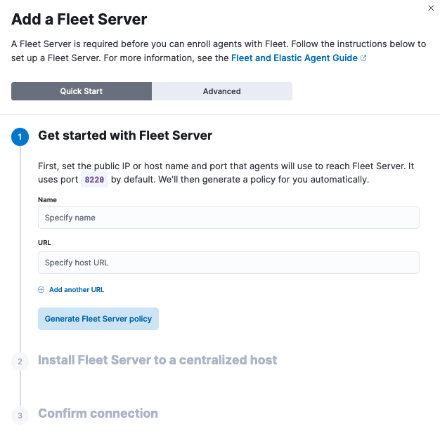
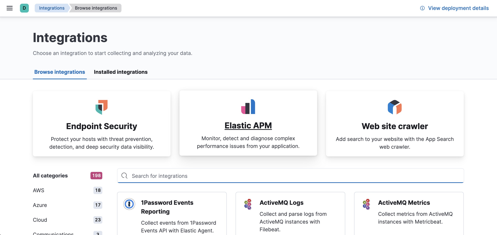
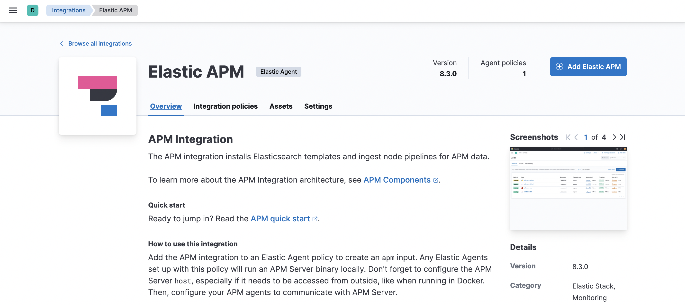
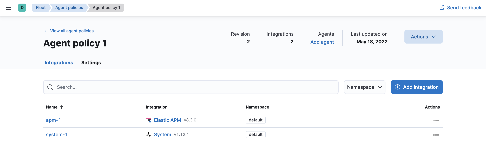

Fleet-managed APM Server
editThis guide will explain how to set up and configure a Fleet-managed APM Server.
Prerequisites
editYou need Elasticsearch for storing and searching your data, and Kibana for visualizing and managing it. When setting these components up, you need:
- Elasticsearch cluster and Kibana (version 8.16) with a basic license or higher. Learn how to install the Elastic Stack on your own hardware.
- Secure, encrypted connection between Kibana and Elasticsearch. For more information, see Start the Elastic Stack with security enabled.
-
Internet connection for Kibana to download integration packages from the
Elastic Package Registry. Make sure the Kibana server can connect to
https://epr.elastic.coon port443. If your environment has network traffic restrictions, there are ways to work around this requirement. See Air-gapped environments for more information. -
Kibana user with
Allprivileges on Fleet and Integrations. Since many Integrations assets are shared across spaces, users need the Kibana privileges in all spaces. -
In the Elasticsearch configuration, the
built-in API key
service must be enabled.
(
xpack.security.authc.api_key.enabled: true) -
In the Kibana configuration, the saved objects encryption key
must be set. Fleet requires this setting in order to save API keys and encrypt
them in Kibana. You can either set
xpack.encryptedSavedObjects.encryptionKeyto an alphanumeric value of at least 32 characters, or run thekibana-encryption-keyscommand to generate the key.
Example security settings
For testing purposes, you can use the following settings to get started quickly, but make sure you properly secure the Elastic Stack before sending real data.
elasticsearch.yml example:
xpack.security.enabled: true xpack.security.authc.api_key.enabled: true
kibana.yml example:
elasticsearch.username: "kibana_system" xpack.encryptedSavedObjects.encryptionKey: "something_at_least_32_characters"
|
The password should be stored in the Kibana keystore as described in the Elasticsearch security documentation. |
Step 1: Set up Fleet
editUse Fleet in Kibana to get APM data into the Elastic Stack. The first time you use Fleet, you’ll need to set it up and add a Fleet Server:
To deploy a self-managed Fleet Server, you install an Elastic Agent and enroll it in an agent policy containing the Fleet Server integration.
You can install only a single Elastic Agent per host, which means you cannot run Fleet Server and another Elastic Agent on the same host unless you deploy a containerized Fleet Server.
- In Fleet, open the Settings tab. For more information about these settings, see Fleet settings.
-
Under Fleet Server hosts, click Edit hosts and specify one or more host URLs your Elastic Agents will use to connect to Fleet Server. For example,
https://192.0.2.1:8220, where192.0.2.1is the host IP where you will install Fleet Server. Save and apply your settings.If the Edit hosts option is grayed out, Fleet Server hosts are configured outside of Fleet. For more information, refer to Fleet settings in Kibana.
-
In the Elasticsearch hosts field, specify the Elasticsearch URLs where Elastic Agents will send data.
For example,
https://192.0.2.0:9200. Skip this step if you’ve started the Elastic Stack with security enabled (you cannot change this setting because it’s managed outside of Fleet). - Save and apply the settings.
-
Click the Agents tab and follow the in-product instructions to add a Fleet server:

Notes:
- Choose Quick Start if you want Fleet to generate a Fleet Server policy and enrollment token for you. The Fleet Server policy will include a Fleet Server integration plus a system integration for monitoring Elastic Agent. This option generates self-signed certificates and is not recommended for production use cases.
-
Choose Advanced if you want to either:
- Use your own Fleet Server policy. You can create a new Fleet Server policy or select an existing one. Alternatively you can create a Fleet Server policy without using the UI, and select the policy here.
- Use your own TLS certificates to encrypt traffic between Elastic Agents and Fleet Server. To learn how to generate certs, refer to Configure SSL/TLS for self-managed Fleet Servers.
-
It’s recommended you generate a unique service token for each
Fleet Server. For other ways to generate service tokens, see
elasticsearch-service-tokens. -
If you are providing your own certificates:
-
Before running the
installcommand, make sure you replace the values in angle brackets. -
Note that the URL specified by
--urlmust match the DNS name used to generate the certificate specified by--fleet-server-cert.
-
Before running the
-
The
installcommand installs the Elastic Agent as a managed service and enrolls it in a Fleet Server policy. For more Fleet Server commands, see Elastic Agent command reference.
If installation is successful, you’ll see confirmation that Fleet Server connected. Click Continue enrolling Elastic Agent to begin enrolling your agents in Fleet Server.
If you’re unable to add a Fleet-managed agent, click the Agents tab and confirm that the agent running Fleet Server is healthy.
For more information, refer to Fleet Server.
Step 2: Add and configure the APM integration
edit- In Kibana, find Integrations in the main menu or use the global search field.
-
Select Elastic APM.
 -
Click Add Elastic APM.
 -
On the Add Elastic APM integration page, define the host and port where APM Server will listen. Make a note of this value—you’ll need it later.
Using Docker or Kubernetes? Set the host to
0.0.0.0to bind to all interfaces. - Under Agent authorization, set a Secret token. This will be used to authorize requests from APM agents to the APM Server. Make a note of this value—you’ll need it later.
- Click Save and continue. This step takes a minute or two to complete. When it’s done, you’ll have an agent policy that contains an APM integration policy for the configuration you just specified.
-
To view the new policy, click Agent policy 1.
Any Elastic Agents assigned to this policy will collect APM data from your instrumented services.
Step 3: Install APM agents
editAPM agents are written in the same language as your service. To monitor a new service, you must install the agent and configure it with a service name, APM Server host, and Secret token.
-
Service name: The APM integration maps an instrumented service’s name–defined in each APM agent’s configuration–
to the index that its data is stored in Elasticsearch.
Service names are case-insensitive and must be unique.
For example, you cannot have a service named
Fooand another namedfoo. Special characters will be removed from service names and replaced with underscores (_). - APM Server URL: The host and port that APM Server listens for events on. This should match the host and port defined when setting up the APM integration.
- Secret token: Authentication method for APM agent and APM Server communication. This should match the secret token defined when setting up the APM integration.
You can edit your APM integration settings if you need to change the APM Server URL or secret token to match your APM agents.
1. Add the agent to your project
First, add the Elastic APM agent plugin to your application’s build.gradle file as shown below:
// Android app's build.gradle file
plugins {
id "com.android.application"
id "co.elastic.apm.android" version "[latest_version]"
}
|
The Elastic plugin declaration must be added below the Android app plugin declaration ( |
2. Configure the agent
After adding the agent plugin, configure it. A minimal configuration sets the Elastic APM integration endpoint as shown below:
// Android app's build.gradle file
plugins {
//...
id "co.elastic.apm.android" version "[latest_version]"
}
elasticApm {
// Minimal configuration
serverUrl = "https://your.elastic.server"
// Optional
serviceName = "your app name"
serviceVersion = "0.0.0"
apiKey = "your server api key"
secretToken = "your server auth token"
}
|
You can find the latest version in the Gradle plugin portal. |
|
|
Defaults to your |
|
|
Defaults to your |
|
|
Defaults to null. More info on API Keys here. |
|
|
Defaults to null. |
When both secretToken and apiKey are provided, apiKey has priority and secretToken is ignored.
3. Initialize the agent
After syncing your project with the Gradle changes above, the Elastic APM agent needs to be initialized within your Application class. This example shows the simplest way to configure the agent:
// Your Application class
class MyApp extends android.app.Application {
@Override
public void onCreate() {
super.onCreate();
ElasticApmAgent.initialize(this);
}
}
All that’s left is to compile and run your application. That’s it!
Learn more in the agent reference
Read more in the APM Android Agent Reference.
1. Install the agent
Install the Elastic APM Go agent package using go get:
go get -u go.elastic.co/apm/v2
2. Configure the agent
To simplify development and testing,
the agent defaults to sending data to the Elastic APM integration at http://localhost:8200.
To send data to an alternative location, you must configure ELASTIC_APM_SERVER_URL.
# The APM integration host and port export ELASTIC_APM_SERVER_URL= # If you do not specify `ELASTIC_APM_SERVICE_NAME`, the Go agent will use the # executable name. For example, if your executable is called "my-app.exe", then your # service will be identified as "my-app". export ELASTIC_APM_SERVICE_NAME= # Secret tokens are used to authorize requests to the APM integration export ELASTIC_APM_SECRET_TOKEN=
3. Instrument your application
Instrumentation is the process of extending your application’s code to report trace data to Elastic APM. Go applications must be instrumented manually at the source code level. To instrument your applications, use one of the following approaches:
- Built-in instrumentation modules.
- Custom instrumentation and context propagation with the Go Agent API.
Learn more in the agent reference
1. Add the agent dependency to your project
Add the Elastic APM iOS Agent to your Xcode project or your Package.swift.
Here are instructions for adding a package dependency to a standard Xcode project.
Refer to Add a Dependency on Another Swift Package for details about adding dependencies to your Package.swift.
Here is a helpful code-snippet:
Package(
dependencies:[
.package(name: "apm-agent-ios", url: "https://github.com/elastic/apm-agent-ios.git", from: "1.0.0"),
],
targets:[
.target(
name: "MyApp",
dependencies: [
.product(name: "ElasticApm", package: "apm-agent-ios")
]
),
])
2. Initialize the agent
If you’re using SwiftUI to build your app, add the following to your App.swift:
import SwiftUI
import ElasticApm
class AppDelegate : NSObject, UIApplicationDelegate {
func application(_ application: UIApplication, didFinishLaunchingWithOptions launchOptions: [UIApplication.LaunchOptionsKey : Any]? = nil) -> Bool {
var config = AgentConfigBuilder()
.withServerUrl(URL(string:"http://127.0.0.1:8200"))
.withSecretToken("<SecretToken>")
.build()
ElasticApmAgent.start(with: config)
return true
}
}
@main
struct MyApp: App {
@UIApplicationDelegateAdaptor(AppDelegate.self) var appDelegate
init() {
}
var body: some Scene {
WindowGroup {
ContentView()
}
}
}
If you’re not using SwiftUI, you can alternatively add the same thing to your AppDelegate.swift file:
import UIKit
import ElasticApm
@main
class AppDelegate: UIResponder, UIApplicationDelegate {
func application(_ application: UIApplication, didFinishLaunchingWithOptions launchOptions: [UIApplication.LaunchOptionsKey: Any]?) -> Bool {
var config = AgentConfigBuilder()
.withServerUrl(URL(string:"http://127.0.0.1:8200"))
.withSecretToken("<SecretToken>")
.build()
ElasticApmAgent.start(with: config)
return true
}
}
Learn more in the agent reference
Read more in the APM iOS Agent Reference.
Manually set up and configure the agent with the -javaagent JVM option. No application code change is required, but this requires an
application restart. See below for more information on this setup method.
1. Download the APM agent
The first step in getting started with the Elastic APM Java agent is to retrieve a copy of the agent JAR. Java agent releases are published to Maven central. In order to get a copy you can either:
- download the latest agent or previous releases from Maven central.
-
download with
curl:curl -o 'elastic-apm-agent.jar' -L 'https://oss.sonatype.org/service/local/artifact/maven/redirect?r=releases&g=co.elastic.apm&a=elastic-apm-agent&v=LATEST'
2. Add -javaagent flag
When starting your application, add the JVM flag -javaagent:/path/to/elastic-apm-agent-<version>.jar
3. Configure
Different application servers have different ways of setting the -javaagent flag and system properties.
Start your application (for example a Spring Boot application or other embedded servers) and add the -javaagent JVM flag.
Use the -D prefix to configure the agent using system properties:
java -javaagent:/path/to/elastic-apm-agent-<version>.jar -Delastic.apm.service_name=my-cool-service -Delastic.apm.application_packages=org.example,org.another.example -Delastic.apm.server_url=http://127.0.0.1:8200 -jar my-application.jar
Refer to Manual setup with -javaagent flag to learn more.
Alternate setup methods
-
Automatic setup with
apm-agent-attach-cli.jar
Automatically set up the agent without needing to alter the configuration of your JVM or application server. This method requires no changes to application code or JVM options, and allows attaching to a running JVM. Refer to the Java agent documentation for more information on this setup method. -
Programmatic API setup to self-attach
Set up the agent with a one-line code change and an extraapm-agent-attachdependency. This method requires no changes to JVM options, and the agent artifact is embedded within the packaged application binary. Refer to the Java agent documentation for more information on this setup method.
Set up the APM agent
The .NET agent can be added to an application in a few different ways:
- Profiler runtime instrumentation: The agent supports auto instrumentation without any code change and without any recompilation of your projects. See Profiler auto instrumentation.
- NuGet packages: The agent ships as a set of NuGet packages available on nuget.org. You can add the Agent and specific instrumentations to a .NET application by referencing one or more of these packages and following the package documentation.
- Host startup hook: On .NET Core 3.0+ or .NET 5+, the agent supports auto instrumentation without any code change and without any recompilation of your projects. See Zero code change setup on .NET Core for more details.
Learn more in the agent reference
1. Install the APM agent
Install the APM agent for Node.js as a dependency to your application.
npm install elastic-apm-node --save
2. Initialization
It’s important that the agent is started before you require any other modules in your Node.js application - i.e. before http and before your router etc.
This means that you should probably require and start the agent in your application’s main file (usually index.js, server.js or app.js).
Here’s a simple example of how Elastic APM is normally required and started:
// Add this to the VERY top of the first file loaded in your app
var apm = require('elastic-apm-node').start({
// Override service name from package.json
// Allowed characters: a-z, A-Z, 0-9, -, _, and space
serviceName: '',
// Use if APM integration requires a token
secretToken: '',
// Use if APM integration uses API keys for authentication
apiKey: '',
// Set custom APM integration host and port (default: http://127.0.0.1:8200)
serverUrl: '',
})
The agent will now monitor the performance of your application and record any uncaught exceptions.
Learn more in the agent reference
1. Install the agent
Install the agent using one of the packages for supported platforms.
To use the RPM Package (RHEL/CentOS and Fedora):
rpm -ivh <package-file>.rpm
To use the DEB package (Debian and Ubuntu):
dpkg -i <package-file>.deb
To use the APK package (Alpine):
apk add --allow-untrusted <package-file>.apk
If you can’t find your distribution, you can install the agent by building it from the source. The following instructions will build the APM agent using the same docker environment that Elastic uses to build our official packages.
The agent is currently only available for Linux operating system.
- Download the agent source from https://github.com/elastic/apm-agent-php/.
- Execute the following commands to build the agent and install it:
cd apm-agent-php
# for linux glibc - libc distributions (Ubuntu, Redhat, etc)
export BUILD_ARCHITECTURE=linux-x86-64
# for linux with musl - libc distributions (Alpine)
export BUILD_ARCHITECTURE=linuxmusl-x86-64
# provide a path to php-config tool
export PHP_CONFIG=php-config
# build extensions
make -f .ci/Makefile build
# run extension tests
PHP_VERSION=`$PHP_CONFIG --version | cut -d'.' -f 1,2` make -f .ci/Makefile run-phpt-tests
# install agent extensions
sudo cp agent/native/_build/${BUILD_ARCHITECTURE}-release/ext/elastic_apm-*.so `$PHP_CONFIG --extension-dir`
# install automatic loader
sudo cp agent/native/_build/${BUILD_ARCHITECTURE}-release/loader/code/elastic_apm_loader.so `$PHP_CONFIG --extension-dir`
2. Enable and configure the APM agent
Enable and configure your agent inside of the php.ini file:
extension=elastic_apm_loader.so elastic_apm.bootstrap_php_part_file=<repo root>/agent/php/bootstrap_php_part.php
Learn more in the agent reference
- Django
-
1. Install the APM agent
Install the APM agent for Python as a dependency.
$ pip install elastic-apm
2. Configure the agent
Agents are libraries that run inside of your application process. APM services are created programmatically based on the
SERVICE_NAME.# Add the agent to the installed apps INSTALLED_APPS = ( 'elasticapm.contrib.django', # ... ) ELASTIC_APM = { # Set required service name. Allowed characters: # a-z, A-Z, 0-9, -, _, and space 'SERVICE_NAME': '', # Use if APM integration requires a token 'SECRET_TOKEN': '', # Set custom APM integration host and port (default: http://localhost:8200) 'SERVER_URL': '', } # To send performance metrics, add our tracing middleware: MIDDLEWARE = ( 'elasticapm.contrib.django.middleware.TracingMiddleware', #... ) - Flask
-
1. Install the APM agent
Install the APM agent for Python as a dependency.
$ pip install elastic-apm[flask]
2. Configure the agent
Agents are libraries that run inside of your application process. APM services are created programmatically based on the
SERVICE_NAME.# initialize using environment variables from elasticapm.contrib.flask import ElasticAPM app = Flask(__name__) apm = ElasticAPM(app) # or configure to use ELASTIC_APM in your application settings from elasticapm.contrib.flask import ElasticAPM app.config['ELASTIC_APM'] = { # Set required service name. Allowed characters: # a-z, A-Z, 0-9, -, _, and space 'SERVICE_NAME': '', # Use if APM integration requires a token 'SECRET_TOKEN': '', # Set custom APM integration host and port (default: http://localhost:8200) 'SERVER_URL': '', } apm = ElasticAPM(app)
Learn more in the agent reference
1. Install the APM agent
Add the agent to your Gemfile.
gem 'elastic-apm'
2. Configure the agent
- Ruby on Rails
-
APM is automatically started when your app boots. Configure the agent by creating the config file
config/elastic_apm.yml:# config/elastic_apm.yml: # Set service name - allowed characters: a-z, A-Z, 0-9, -, _ and space # Defaults to the name of your Rails app service_name: 'my-service' # Use if APM integration requires a token secret_token: '' # Set custom APM integration host and port (default: http://localhost:8200) server_url: 'http://localhost:8200'
- Rack
-
For Rack or a compatible framework, like Sinatra, include the middleware in your app and start the agent.
# config.ru app = lambda do |env| [200, {'Content-Type' => 'text/plain'}, ['ok']] end # Wraps all requests in transactions and reports exceptions use ElasticAPM::Middleware # Start an instance of the Agent ElasticAPM.start(service_name: 'NothingButRack') run app # Gracefully stop the agent when process exits. # Makes sure any pending transactions are sent. at_exit { ElasticAPM.stop }Create a config file
Create a config file config/elastic_apm.yml:
# config/elastic_apm.yml: # Set service name - allowed characters: a-z, A-Z, 0-9, -, _ and space # Defaults to the name of your Rack app's class. service_name: 'my-service' # Use if APM integration requires a token secret_token: '' # Set custom APM integration host and port (default: http://localhost:8200) server_url: 'http://localhost:8200'
Learn more in the agent reference
1. Enable Real User Monitoring (RUM)
RUM is disabled by default. Enable it by setting Enable RUM to true.
2. Set up the agent
Set up the agent with <script> tags or by using a bundler.
Synchronous / Blocking Pattern
Add a <script> tag to load the bundle and use the elasticApm global
object to initialize the agent:
<script src="https://<your-cdn-host>.com/path/to/elastic-apm-rum.umd.min-<version>.js" crossorigin></script>
<script>
elasticApm.init({
serviceName: '<instrumented-app>',
serverUrl: '<apm-server-url>',
})
</script>
Asynchronous / Non-Blocking Pattern
Loading the script asynchronously ensures the agent script will not block other
resources on the page, however, it will still block browsers onload event.
<script>
;(function(d, s, c) {
var j = d.createElement(s),
t = d.getElementsByTagName(s)[0]
j.src = 'https://<your-cdn-host>.com/path/to/elastic-apm-rum.umd.min-<version>.js'
j.onload = function() {elasticApm.init(c)}
t.parentNode.insertBefore(j, t)
})(document, 'script', {serviceName: '<instrumented-app>', serverUrl: '<apm-server-url>'})
</script>
Using Bundlers
Install the Real User Monitoring APM agent as a dependency to your application:
npm install @elastic/apm-rum --save
Configure the agent:
import { init as initApm } from '@elastic/apm-rum'
const apm = initApm({
// Set required service name (allowed characters: a-z, A-Z, 0-9, -, _, and space)
serviceName: '',
// Set custom APM integration host and port (default: http://localhost:8200)
serverUrl: 'http://localhost:8200',
// Set service version (required for sourcemap feature)
serviceVersion: ''
})
Learn more in the agent reference
Elastic integrates with OpenTelemetry, allowing you to reuse your existing instrumentation to easily send observability data to the Elastic Stack.
For more information on how to combine Elastic and OpenTelemetry, see OpenTelemetry integration.
Step 4: View your data
editBack in Kibana, under Observability, select APM. You should see application performance monitoring data flowing into the Elastic Stack!